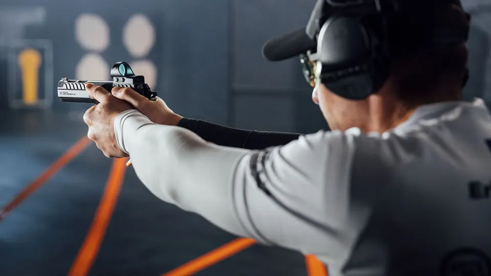
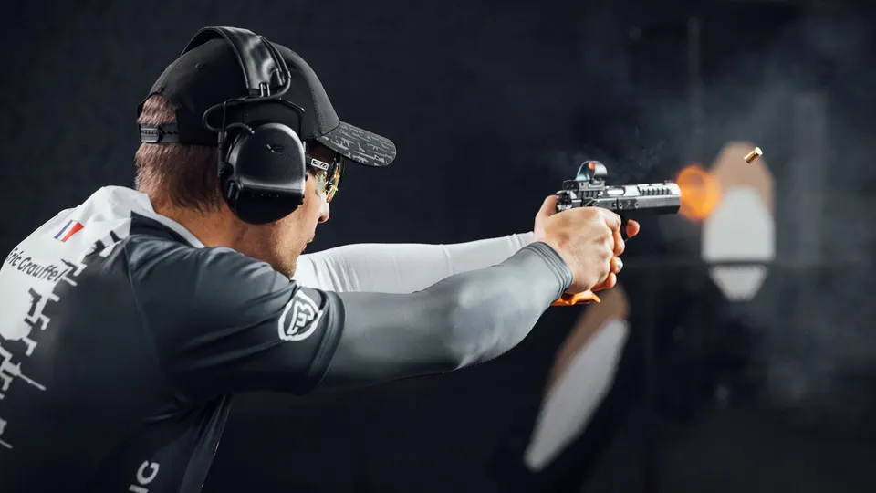
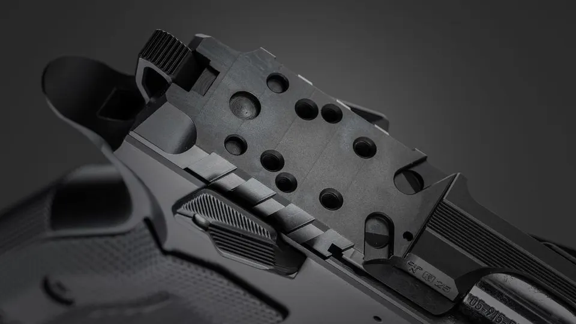
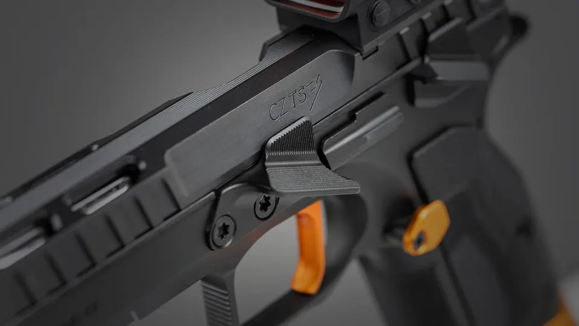
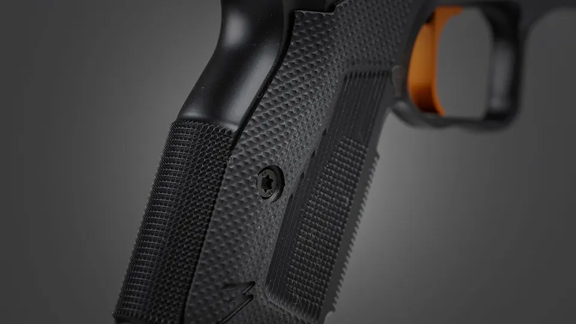
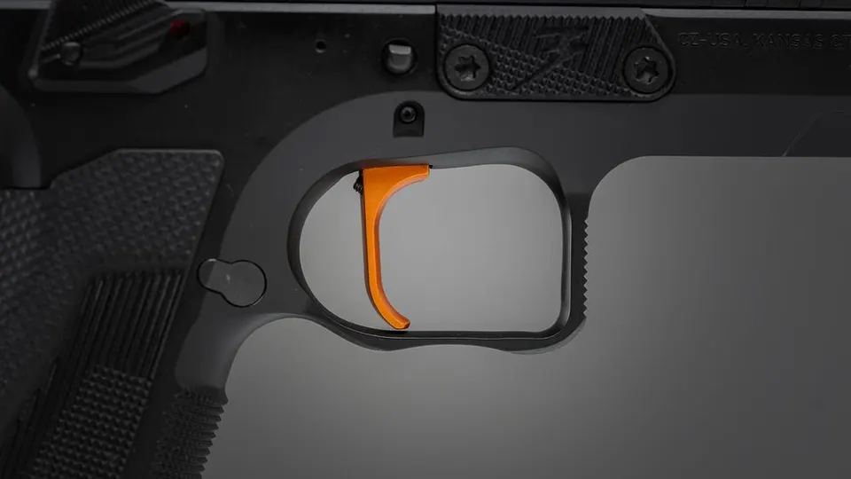

CZ TS 3 Orange
Vlajková loď nové soutěžní řady CZ TS 3
Aktualizováno

Připraveno na soutěž
CZ TS 3 Orange je vlajkovou lodí nové soutěžní řady CZ TS 3, vyvinuté pro divize IPSC Optics a USPSA Limited Optics. Stavíme ji na přesné spoušti s jasně definovaným průrazem a krátkým návratem, na leštěné kované hlavni a na pečlivě vyladěné ergonomii.

Optics-Ready
CZ TS 3 nyní splňuje pravidla divizí USPSA Limited Optics a IPSC Optics. Kolimátor se montuje přímo na závěr, bez nutnosti adaptérových plat. Podporuje nejoblíbenější stopy RMR, RMSc, Delta Point Pro a Holosun-K - stačí nasadit oblíbenou optiku a vyrazit na střelnici.

Vylepšená ergonomie
Opěrka palce
Přepracovaná s vyšším bočním profilem, který vylučuje kontakt palce se závěrem. Pistole je připravena i pro leváky; pravou opěrku palce lze dokoupit jako příslušenství.

Pojistka a zásobníková západka
Nová manuální pojistka odpovídá úhlu opěrky palce 25° pro přirozené uložení podpůrné ruky. Západku zásobníku lze nastavit do pěti poloh pro rychlé a kontrolované přebíjení.
Střenky a rám
Střenky z odolného kompozitu G10 mají upravenou geometrii a rýhování pro pevný a pohodlný úchop. Rám je frézovaný z jediného kusu oceli; hlubší podřezání zadního výběžku a lučíku umožňuje držet pistoli výše.

Vyladěný závěr a hlaveň
Přepracovaný závěr nabízí agresivní zadní rýhování a optimalizované odlehčovací výřezy, které zvyšují pohodlí při manipulaci. Běží po plné délce lišt rámu a díky úzkým tolerancím a ručnímu dolaďování dosahuje vysoké přesnosti. Odolná nitridace BoBox chrání zbraň za jakýchkoli podmínek na střelnici.
Těžká hlaveň kovaná za studena s novým provedením ústí je odolnější a umožňuje ještě vyšší přesnost.
Soutěžní spoušť
Spoušť Single Action Only s nastavitelným předzdvihem a přejezdem se spouští při zhruba 1,3 lb (asi 0,6 kg). Nové soutěžní kladívko zaručuje mimořádně hladký a čistý průraz.
